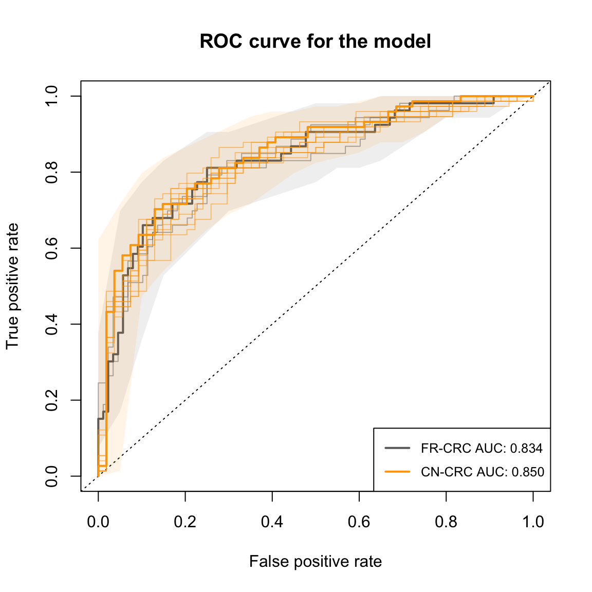

SIAMCAT_holdout.RmdOne of the functionalities of the SIAMCAT package is the training of statistical machine learning models on metagenomics data. In this vignette, we demonstrate how such a model can be built on one dataset and then be applied on another, similarly processed holdout dataset. This might be of interest when comparing data from two different studies on the same disease.
In this vignette, we look at two datasets from studies on colorectal cancer (CRC). The first study from Zeller et al. investigated metagenomic markers for CRC in a population in France, while the second study from Yu et al. used samples from China for the same goal. Both datasets were profiled with the same taxonomic profiling tool, yielding the same taxonomic identifiers, which is required for holdout testing.
The datasets can be found on the web repository for public metagenomics datasets from the Zeller group.
library(SIAMCAT)
# this is data from Zeller et al., Mol. Syst. Biol. 2014
fn.feat.fr <-
'https://embl.de/download/zeller/FR-CRC/FR-CRC-N141_tax-ab-specI.tsv'
fn.meta.fr <-
'https://embl.de/download/zeller/FR-CRC/FR-CRC-N141_metadata.tsv'
# this is the external dataset from Yu et al., Gut 2017
fn.feat.cn <-
'https://embl.de/download/zeller/CN-CRC/CN-CRC-N128_tax-ab-specI.tsv'
fn.meta.cn <-
'https://embl.de/download/zeller/CN-CRC/CN-CRC-N128_metadata.tsv'First of all, we build a SIAMCAT object using the data from the French study in the same way that we have seen before in the main SIAMCAT vignette.
# features
# be vary of the defaults in R!!!
feat.fr <- read.table(fn.feat.fr, sep='\t', quote="",
check.names = FALSE, stringsAsFactors = FALSE)
# the features are counts, but we want to work with relative abundances
feat.fr.rel <- prop.table(as.matrix(feat.fr), 2)
# metadata
meta.fr <- read.table(fn.meta.fr, sep='\t', quote="",
check.names=FALSE, stringsAsFactors=FALSE)
# create SIAMCAT object
siamcat.fr <- siamcat(feat=feat.fr.rel, meta=meta.fr,
label='Group', case='CRC')## + starting create.label## Label used as case:
## CRC
## Label used as control:
## CTR## + finished create.label.from.metadata in 0.015 s## + starting validate.data## +++ checking overlap between labels and features## + Keeping labels of 141 sample(s).## +++ checking sample number per class## +++ checking overlap between samples and metadata## + finished validate.data in 0.039 sWe can load the data from the Chinese study in a similar way and also create a SIAMCAT object for the holdout dataset.
# features
feat.cn <- read.table(fn.feat.cn, sep='\t', quote="",
check.names = FALSE)
feat.cn.rel <- prop.table(as.matrix(feat.cn), 2)
# metadata
meta.cn <- read.table(fn.meta.cn, sep='\t', quote="",
check.names=FALSE, stringsAsFactors = FALSE)
# SIAMCAT object
siamcat.cn <- siamcat(feat=feat.cn.rel, meta=meta.cn,
label='Group', case='CRC')## + starting create.label## Label used as case:
## CRC
## Label used as control:
## CTR## + finished create.label.from.metadata in 0.001 s## + starting validate.data## +++ checking overlap between labels and features## + Keeping labels of 128 sample(s).## +++ checking sample number per class## +++ checking overlap between samples and metadata## + finished validate.data in 0.031 sWith the French dataset, we perform the complete process of model building within SIAMCAT, including data preprocessing steps like data validation, filtering, and data normalization.
siamcat.fr <- filter.features(
siamcat.fr,
filter.method = 'abundance',
cutoff = 0.001,
rm.unmapped = TRUE,
verbose=2
)## + starting filter.features## +++ before filtering, the data have 1754 features## +++ removed 1 features corresponding to UNMAPPED reads## +++ removed 1538 features whose values did not exceed 0.001 in any sample (retaining 215)## + finished filter.features in 0.003 ssiamcat.fr <- normalize.features(
siamcat.fr,
norm.method = "log.std",
norm.param = list(log.n0 = 1e-06, sd.min.q = 0.1),
verbose = 2
)## + starting normalize.features## +++ performing de novo normalization using the log.std method## + feature sparsity before normalization: 46.05%## +++ feature sparsity after normalization: 0 %## + finished normalize.features in 0.004 sNow, we can build the statistical model. We use the same parameters as in the main SIAMCAT vignette, where the process is explained in more detail.
siamcat.fr <- create.data.split(
siamcat.fr,
num.folds = 5,
num.resample = 2
)## Features splitted for cross-validation successfully.siamcat.fr <- train.model(
siamcat.fr,
method = "lasso"
)## Trained lasso models successfully.Finally, we can make predictions for each cross-validation fold and evaluate the predictions as seen in the main SIAMCAT vignette.
siamcat.fr <- make.predictions(siamcat.fr)## Made predictions successfully.siamcat.fr <- evaluate.predictions(siamcat.fr)## Evaluated predictions successfully.Now that we have successfully built the model for the French dataset, we can apply it to the Chinese holdout dataset. First, we will normalize the Chinese dataset with the same parameters that we used for the French dataset in order to make the data comparable. For that step, we can use the frozen normalization functionality in the normalize.features function in SIAMCAT. We supply to the function all normalization parameters saved in the siamcat.fr object, which can be accessed using the norm_params accessor.
siamcat.cn <- normalize.features(siamcat.cn,
norm.param=norm_params(siamcat.fr),
feature.type='original',
verbose = 2)## + starting normalize.features## + normalizing original features## + performing frozen log.std normalization using the supplied parameters## + feature sparsity before normalization: 49.77%## + feature sparsity after normalization: 0%## + finished normalize.features in 0.005 sNext, we apply the trained model to predict the holdout dataset.
siamcat.cn <- make.predictions(
siamcat = siamcat.fr,
siamcat.holdout = siamcat.cn,
normalize.holdout = FALSE)## Warning in make.predictions(siamcat = siamcat.fr, siamcat.holdout =
## siamcat.cn, : WARNING: holdout set is not being normalized!## Made predictions successfully.Note that the make.predictions function can also take care of the normalization of the holdout dataset.
## Alternative Code, not run here
siamcat.cn <- siamcat(feat=feat.cn.rel, meta=meta.cn,
label='Group', case='CRC')
siamcat.cn <- make.predictions(siamcat = siamcat.fr,
siamcat.holdout = siamcat.cn,
normalize.holdout = TRUE)Again, we have to evaluate the predictions:
siamcat.cn <- evaluate.predictions(siamcat.cn)Now, we can compare the performance of the classifier on the original and the holdout dataset by using the model.evaluation.plot function. Here, we can supply several SIAMCAT objects for which the model evaluation will be plotted in the same plot. Note that we can supply the objects as named objects in order to print the names in the legend.
model.evaluation.plot('FR-CRC'=siamcat.fr,
'CN-CRC'=siamcat.cn,
colours=c('dimgrey', 'orange'))
## R version 3.5.3 (2019-03-11)
## Platform: x86_64-apple-darwin15.6.0 (64-bit)
## Running under: macOS Mojave 10.14.3
##
## Matrix products: default
## BLAS: /Library/Frameworks/R.framework/Versions/3.5/Resources/lib/libRblas.0.dylib
## LAPACK: /Library/Frameworks/R.framework/Versions/3.5/Resources/lib/libRlapack.dylib
##
## locale:
## [1] en_US.UTF-8/en_US.UTF-8/en_US.UTF-8/C/en_US.UTF-8/en_US.UTF-8
##
## attached base packages:
## [1] stats graphics grDevices utils datasets methods base
##
## other attached packages:
## [1] SIAMCAT_1.2.0 phyloseq_1.24.2 mlr_2.13 ParamHelpers_1.12
## [5] BiocStyle_2.8.2
##
## loaded via a namespace (and not attached):
## [1] nlme_3.1-137 matrixStats_0.54.0 fs_1.2.6
## [4] RColorBrewer_1.1-2 progress_1.2.0.9000 PRROC_1.3.1
## [7] rprojroot_1.3-2 tools_3.5.3 backports_1.1.3
## [10] R6_2.4.0 vegan_2.5-2 lazyeval_0.2.1
## [13] BiocGenerics_0.26.0 mgcv_1.8-27 colorspace_1.3-2
## [16] permute_0.9-4 ade4_1.7-11 tidyselect_0.2.4
## [19] gridExtra_2.3 prettyunits_1.0.2 compiler_3.5.3
## [22] parallelMap_1.3 glmnet_2.0-16 Biobase_2.40.0
## [25] xml2_1.2.0 desc_1.2.0 bookdown_0.7
## [28] scales_1.0.0 checkmate_1.9.1 pkgdown_1.3.0
## [31] commonmark_1.5 stringr_1.4.0 digest_0.6.18
## [34] rmarkdown_1.10 XVector_0.20.0 pkgconfig_2.0.2
## [37] htmltools_0.3.6 rlang_0.3.1 rstudioapi_0.7
## [40] BBmisc_1.11 bindr_0.1.1 jsonlite_1.5
## [43] dplyr_0.7.6 magrittr_1.5 biomformat_1.8.0
## [46] Matrix_1.2-15 Rcpp_1.0.0 munsell_0.5.0
## [49] S4Vectors_0.18.3 Rhdf5lib_1.2.1 ape_5.1
## [52] infotheo_1.2.0 stringi_1.3.1 pROC_1.13.0
## [55] yaml_2.2.0 MASS_7.3-51.1 zlibbioc_1.26.0
## [58] rhdf5_2.24.0 plyr_1.8.4 grid_3.5.3
## [61] LiblineaR_2.10-8 parallel_3.5.3 crayon_1.3.4
## [64] lattice_0.20-38 Biostrings_2.48.0 splines_3.5.3
## [67] multtest_2.36.0 hms_0.4.2 knitr_1.20
## [70] beanplot_1.2 pillar_1.3.1 igraph_1.2.2
## [73] reshape2_1.4.3 codetools_0.2-16 stats4_3.5.3
## [76] fastmatch_1.1-0 XML_3.98-1.17 glue_1.3.0
## [79] evaluate_0.11 data.table_1.12.0 foreach_1.4.4
## [82] gtable_0.2.0 purrr_0.2.5 assertthat_0.2.0
## [85] ggplot2_3.1.0 xfun_0.3 gridBase_0.4-7
## [88] roxygen2_6.1.0 survival_2.43-3 tibble_2.0.1
## [91] iterators_1.0.10 memoise_1.1.0 IRanges_2.14.10
## [94] bindrcpp_0.2.2 cluster_2.0.7-1 corrplot_0.84